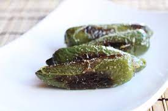

Austin's Famous Breakfast

Description
Another staple. I love spice. This is a great and easy way to prepare Jalapenos, which offer numerous health benefits. Great alone or with a meal!
Ingredients
- Jalapeno peppers
- 1 tbl spoon Olive Oil
- Adobo seasoning
Steps
- Place medium saucepan on stove
- Add olive oil and place stove on medium heat
- Cut Jalapenos in half
- Optional: remove seeds if you are senstitive to spice (not recommended)
- Cook Jalapenos on both side until dark
- Add Adobo seasoning liberally while peppers are cooking
- Enjoy!